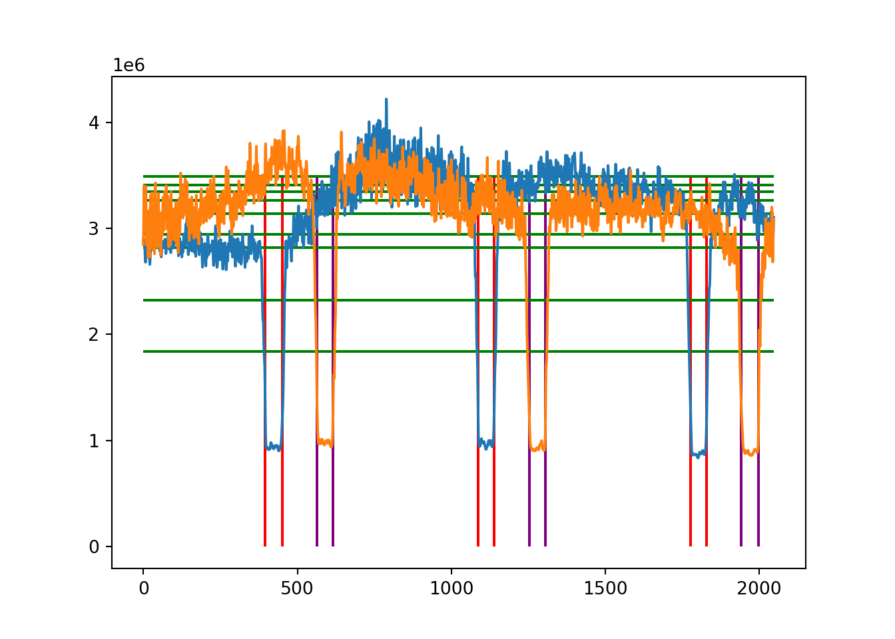

Geometric image properties assessment
In this section we explore the geometric properties of the array itself. In this analysis we specify some data manually and use it to explore array geometric corrections. Once we have an understanding of the distortions we can look at automated correction strategies.
This report section was generated using RMarkdown in RStudio with the r-reticulate package to support Python sections. The included script generates the figures.
I used this project to also learn Python (so don’t judge the code elements :) ).
I have included the code for your interest but hidden it by default to improve readability.
Look in the About section for libraries and default parameters.
Analysis
In this analysis we don’t try to correct the base images themselves. A uniform grid of pad locations is projected in to image space to allow us to review how basic transforms perform in capturing the grids.
Guess where the sub arrays may be
The basic review showed that in the 488 image at least the background between the arrays is lower so here we explore a quick and easy way to obtain a ‘ball park’ estimate which we then could use template matching or a similar approach to derive accurate array edge points instead of the manually supplied ones.
All we are doing is creating a sum of the pixels columns (blue) and then rows (orange). The horizontal green lines mark percentiles of the column sums (we use it to choose a threshold). The vertical red and purple lines are the boundaries that result which are then displayed in cyan on the image.
# take a guess where the inter subarray regions are based on grey level values
threshPerc=8
colSums= origimg.sum(axis=0)
rowSums= origimg.sum(axis=1)
percen=np.percentile(colSums,(9,10,20,30,40,50,60,70,80))
arrX=gridBorders(colSums,threshPerc)
arrY=gridBorders(rowSums,threshPerc)
plt.ioff();
plt.plot(np.arange(0,len(colSums)),colSums);
plt.plot(np.arange(0,len(rowSums)),rowSums);
plt.vlines(arrX,0,percen[8],colors=np.repeat('r',len(arrX)));
plt.vlines(arrY,0,percen[8],colors=np.repeat('purple',len(arrY)));
plt.hlines(percen,0,len(colSums),'g');
plt.show()
plt.close()
# draw them on the image
for i in np.arange(0,len(arrX),2):
colimg=cv.rectangle(colimg,(arrX[i],0),(arrX[i+1],colimg.shape[1]),(65535,65535,0),1)
for i in np.arange(0,len(arrY),2):
colimg=cv.rectangle(colimg,(0,arrY[i]),(colimg.shape[0],arrY[i+1]),(65535,65535,0),1)
# Draw the manually defined patches on too
for patchName in patches:
pts=patches[patchName]
colimg=cv.polylines(colimg,[pts.reshape((-1,1,2))],True,(65535,0,0))
colimg=cv.putText(colimg,patchName,(pts[0,0],pts[0,1]-2*interpad),cv.FONT_HERSHEY_SIMPLEX,1,(65535,0,0),2,cv.LINE_AA)
guessImageFile=folderStub+fileStub+" origGuess.png"
ok=cv.imwrite(guessImageFile, colimg)It seems to work reasonably well with 488 and likely with images with at least bit depth of this level but it is not as clean with 647 but it does reduce the search space a great deal. Cyan are the guesses at the borders between sub arrays and magenta shows the manually defined sub array boundaries.
 View full image procimage/im488 origGuess.png
View full image procimage/im488 origGuess.png
and for 647  View full image procimage/im647 origGuess.png
View full image procimage/im647 origGuess.png
Geometric assessment of sub array patches
We will now cut out and zoom in on the patches, overlay a grid on the feature elements and asses them.
First we will process and create images and then explore them individually.
The affine transform uses three points (the top left, top right and bottom right) so the most likely misalignment will be in the bottom left corner. Misalignment in the corner may be due to inaccuracy of the manually selected points or the transformation not being sufficient to overcome the image distortion.
In general, affine performs reasonably well under visual inspection with the exception of Patch 4. The perspective transformation seems to perform well in all cases and is probably the best ‘first step’. We may explore optimising the ‘pad circles’ by minor individual shifting in a follow on analysis.
for patchName in patches:
pts=patches[patchName]
# create a uniform reference grid based on our manual parameters
estimatedRectSide=(numPads+1)*interpad
ptsRef=np.array([[0,0],[estimatedRectSide,0],[estimatedRectSide,estimatedRectSide],[0,estimatedRectSide]],np.int32)
# work out the sub area of the image to crop out
cropPad=interpad*3
xcrop=min(pts[0:4,0])-cropPad
xcropEnd=max(pts[0:4,0])+cropPad
ycrop=min(pts[0:4,1])-cropPad*4 # leave space for the text
ycropEnd=max(pts[0:4,1])+cropPad
xoffset=pts[0,0]-xcrop
yoffset=pts[0,1]-ycrop
cropOrig=origimg[ycrop:ycropEnd,xcrop:xcropEnd]
ok=cv.imwrite(folderStub+fileStub+patchName+ " origCrop.tif", cropOrig)
# calculate affine and perspective transforms between reference and image space
# based on the manual points
Mback = cv.getAffineTransform(np.float32(ptsRef[0:3]),np.float32(pts[0:3]))
MbackP = cv.getPerspectiveTransform(np.float32(ptsRef[0:4]),np.float32(pts[0:4]))
# create an image to display the affine transformed points
cropImg=colimg[ycrop:ycropEnd,xcrop:xcropEnd]
resAffine = cv.resize(cropImg,None,fx=scaleFac, fy=scaleFac, interpolation = cv.INTER_NEAREST)
ok=cv.imwrite(folderStub+fileStub+patchName+ " subAreaZoom.png", resAffine)
resAffine=cv.putText(resAffine,"Affine transformed fixed grid. Manual grid region selection.",(resAffine.shape[0]//8,90),cv.FONT_HERSHEY_SIMPLEX,2,(65535,0,0),2,cv.LINE_AA)
# create an image to display the perspective transformed points
cropImg=colimg[ycrop:ycropEnd,xcrop:xcropEnd]
resPersp = cv.resize(cropImg,None,fx=scaleFac, fy=scaleFac, interpolation = cv.INTER_NEAREST)
resPersp=cv.putText(resPersp,"Perspective transformed fixed grid. Manual grid region selection.",(resPersp.shape[0]//8,90),cv.FONT_HERSHEY_SIMPLEX,2,(65535,0,0),2,cv.LINE_AA)
rad=np.int32(interpad*scaleFac/2)
pixvals=np.empty([numPads,numPads])
for y in range(0,numPads):
for x in range(0,numPads):
xval=np.floor(x*interpad+interpad)
yval=np.floor(y*interpad+interpad)
xtran=rowMult(Mback,0,xval,yval)
ytran=rowMult(Mback,1,xval,yval)
resAffine=cv.circle(resAffine,(np.int32(scaleFac*(xtran-xcrop)),np.int32(scaleFac*(ytran-ycrop))),rad,(0,65535,0),1)
perScale=rowMult(MbackP,2,xval,yval)
xtran=rowMult(MbackP,0,xval,yval)/perScale
ytran=rowMult(MbackP,1,xval,yval)/perScale
resPersp=cv.circle(resPersp,(np.int32(scaleFac*(xtran-xcrop)),np.int32(scaleFac*(ytran-ycrop))),rad,(0,0,65535),1)
# sum the image pixels in a 'pad' centred around the transformed perspective transform
# doing the rows and columns this way to match what matshow expects to get things the right way up
pixvals[y,x]=np.sum(origimg[np.int32(ytran-interpad):np.int32(ytran+interpad),np.int32(xtran-interpad):np.int32(xtran+interpad)])
ok=cv.imwrite(folderStub+fileStub+patchName+ " subAreaZoomAffineGrid.png", resAffine)
ok=cv.imwrite(folderStub+fileStub+patchName+ " subAreaZoomPerspGrid.png", resPersp)
ok=cv.imwrite(folderStub+fileStub+patchName+ " TLsubAreaZoomAffineGrid.png", resAffine[0:500,0:600])
ok=cv.imwrite(folderStub+fileStub+patchName+ " TLsubAreaZoomPerspGrid.png", resPersp[0:500,0:600])
ok=cv.imwrite(folderStub+fileStub+patchName+ " BLsubAreaZoomAffineGrid.png", resAffine[2300:2800,0:600])
ok=cv.imwrite(folderStub+fileStub+patchName+ " BLsubAreaZoomPerspGrid.png", resPersp[2300:2800,0:600])
plt.ioff()
plt.hist(pixvals.flatten(),bins=256, color = 'r');
plt.title('Histogram of pad pixel sums for '+fileStub+' '+patchName);
plt.grid(True);
plt.savefig(folderStub+fileStub+patchName+ " subAreaZoomPerspGridHist.png");
plt.close();
plt.ioff()
plt.matshow(pixvals,interpolation="none");
plt.title('Map of pad pixel sums for '+fileStub+' '+patchName);
plt.savefig(folderStub+fileStub+patchName+ " subAreaZoomPerspGridMatView.png");
plt.close();Time for this code chunk to run: 5.106 s
Patch 1
 View full image procimage/im488Patch 1 subAreaZoomAffineGrid.png
View full image procimage/im488Patch 1 subAreaZoomAffineGrid.png
Zoom of top left of patch
 View full image procimage/im488Patch 1 TLsubAreaZoomAffineGrid.png
View full image procimage/im488Patch 1 TLsubAreaZoomAffineGrid.png
Zoom of bottom left of patch
There are quite a few examples of the centre of the dark spots not being aligned in the outlines for the pad.
 View full image procimage/im488Patch 1 BLsubAreaZoomAffineGrid.png
View full image procimage/im488Patch 1 BLsubAreaZoomAffineGrid.png
 View full image procimage/im488Patch 1 subAreaZoomPerspGrid.png
View full image procimage/im488Patch 1 subAreaZoomPerspGrid.png
 View full image procimage/im488Patch 1 TLsubAreaZoomPerspGrid.png
View full image procimage/im488Patch 1 TLsubAreaZoomPerspGrid.png
Zoom of bottom left of patch
In general almost all of the features look to be within the outlines with only minor adjustments necessary.
 View full image procimage/im488Patch 1 BLsubAreaZoomPerspGrid.png
View full image procimage/im488Patch 1 BLsubAreaZoomPerspGrid.png
Patch 2
 View full image procimage/im488Patch 2 subAreaZoomAffineGrid.png
View full image procimage/im488Patch 2 subAreaZoomAffineGrid.png
Zoom of top left of patch
 View full image procimage/im488Patch 2 TLsubAreaZoomAffineGrid.png
View full image procimage/im488Patch 2 TLsubAreaZoomAffineGrid.png
Zoom of bottom left of patch
 View full image procimage/im488Patch 2 BLsubAreaZoomAffineGrid.png
View full image procimage/im488Patch 2 BLsubAreaZoomAffineGrid.png
 View full image procimage/im488Patch 2 subAreaZoomPerspGrid.png
View full image procimage/im488Patch 2 subAreaZoomPerspGrid.png
 View full image procimage/im488Patch 2 TLsubAreaZoomPerspGrid.png
View full image procimage/im488Patch 2 TLsubAreaZoomPerspGrid.png
 View full image
View full image Patch 3
 View full image procimage/im488Patch 3 subAreaZoomAffineGrid.png
View full image procimage/im488Patch 3 subAreaZoomAffineGrid.png
Zoom of top left of patch
 View full image procimage/im488Patch 3 TLsubAreaZoomAffineGrid.png
View full image procimage/im488Patch 3 TLsubAreaZoomAffineGrid.png
Zoom of bottom left of patch
Alignment generally good. Looks like there is an extra feature just off the centre of the image. This will be a good test image for the outline optimisation as it could draw the outline from the true feature.
 View full image procimage/im488Patch 3 BLsubAreaZoomAffineGrid.png
View full image procimage/im488Patch 3 BLsubAreaZoomAffineGrid.png
 View full image procimage/im488Patch 3 subAreaZoomPerspGrid.png
View full image procimage/im488Patch 3 subAreaZoomPerspGrid.png
 View full image procimage/im488Patch 3 TLsubAreaZoomPerspGrid.png
View full image procimage/im488Patch 3 TLsubAreaZoomPerspGrid.png
 View full image
View full image Patch 4
 View full image procimage/im488Patch 4 subAreaZoomAffineGrid.png
View full image procimage/im488Patch 4 subAreaZoomAffineGrid.png
Zoom of top left of patch
 View full image procimage/im488Patch 4 TLsubAreaZoomAffineGrid.png
View full image procimage/im488Patch 4 TLsubAreaZoomAffineGrid.png
Zoom of bottom left of patch
There is clear feature alignment for a distinct proportion of the features signalling that the affine transform is not the best starting estimate.
 View full image procimage/im488Patch 4 BLsubAreaZoomAffineGrid.png
View full image procimage/im488Patch 4 BLsubAreaZoomAffineGrid.png
 View full image procimage/im488Patch 4 subAreaZoomPerspGrid.png
View full image procimage/im488Patch 4 subAreaZoomPerspGrid.png
 View full image procimage/im488Patch 4 TLsubAreaZoomPerspGrid.png
View full image procimage/im488Patch 4 TLsubAreaZoomPerspGrid.png
Zoom of bottom left of patch
 View full image procimage/im488Patch 4 BLsubAreaZoomPerspGrid.png
View full image procimage/im488Patch 4 BLsubAreaZoomPerspGrid.png
Patch 3 : Image 647
There aren’t many features to see on 647 but here is a patch example to see the grid overlaid that is based on 488. I chose patch 3 as there was evidence of a ‘between grid’ feature but there is no indication of it here.
 View full image procimage/im647Patch 3 subAreaZoomAffineGrid.png
View full image procimage/im647Patch 3 subAreaZoomAffineGrid.png
Zoom of top left of patch
 View full image procimage/im647Patch 3 TLsubAreaZoomAffineGrid.png
View full image procimage/im647Patch 3 TLsubAreaZoomAffineGrid.png
Zoom of bottom left of patch
There are quite a few examples of the centre of the dark spots not being aligned in the outlines for the pad (in image 488, can’t really tell here).
 View full image procimage/im647Patch 3 BLsubAreaZoomAffineGrid.png
View full image procimage/im647Patch 3 BLsubAreaZoomAffineGrid.png
 View full image procimage/im647Patch 3 subAreaZoomPerspGrid.png
View full image procimage/im647Patch 3 subAreaZoomPerspGrid.png
 View full image procimage/im647Patch 3 TLsubAreaZoomPerspGrid.png
View full image procimage/im647Patch 3 TLsubAreaZoomPerspGrid.png
Zoom of bottom left of patch
In general almost all of the features look to be within the outlines with only minor adjustments necessary.
 View full image procimage/im647Patch 3 BLsubAreaZoomPerspGrid.png
View full image procimage/im647Patch 3 BLsubAreaZoomPerspGrid.png
Simple exploration of data extracted from array features (perspective projection)
In this analysis the raw pixel values from the 16 bit image are summed in a small area (plus and minus 5) centred on the projected feature location.
There are many other approaches we could take but we use this just to have a look.
Histograms of features
There is not much to note in these, certainly no obvious ‘off versus on’. Different feature based measures and images with more dynamic range may show a dual peak. Further investigation required.
 View full image procimage/im488Patch 1 subAreaZoomPerspGridHist.png
View full image procimage/im488Patch 1 subAreaZoomPerspGridHist.png
 View full image procimage/im488Patch 2 subAreaZoomPerspGridHist.png
View full image procimage/im488Patch 2 subAreaZoomPerspGridHist.png
 View full image procimage/im488Patch 3 subAreaZoomPerspGridHist.png
View full image procimage/im488Patch 3 subAreaZoomPerspGridHist.png
 View full image procimage/im488Patch 4 subAreaZoomPerspGridHist.png
View full image procimage/im488Patch 4 subAreaZoomPerspGridHist.png
Grid view of features
There is not much to note in these either, it is just a convenient compact representation of the patch arrays. Different feature based measures and images with more dynamic range may show different properties. The views are auto scaled to range so single intense features can affect the whole plot. Further investigation required.
 View full image procimage/im488Patch 1 subAreaZoomPerspGridMatView.png
View full image procimage/im488Patch 1 subAreaZoomPerspGridMatView.png
 View full image procimage/im488Patch 2 subAreaZoomPerspGridMatView.png
View full image procimage/im488Patch 2 subAreaZoomPerspGridMatView.png
 View full image procimage/im488Patch 3 subAreaZoomPerspGridMatView.png
View full image procimage/im488Patch 3 subAreaZoomPerspGridMatView.png
 View full image procimage/im488Patch 4 subAreaZoomPerspGridMatView.png
View full image procimage/im488Patch 4 subAreaZoomPerspGridMatView.png
Conclusions
Detailed review of the sub array layout and corrections. Manually driven process where we are assessing the corrections that may be required rather than looking to perform automated analysis.
Summary of the geometric analysis
Given image 488 a perspective projection of a uniform grid based on four manually selected points per patch appears to produce a good first spatial correction of the image and enables feature data to be extracted.
On images at least as good as 488 we should be able to compensate for the spatial distortions and reliably extract numerical data in a reasonably small amount of processing time.
The analysis suggests that if the patch corners can be reliably estimated automatically then array data can be extracted.
There were no interesting distributional properties in the histograms based on the sum of the pixels in a small area around the projected feature locations. This gives us little guidance for methodology of calling ‘on/off’ for the individual pads.
Future considerations:
- Automatically find the patch corners,
- Post optimise the projected grid feature locations to compensate for local shifts (allow a small movement in the individual grid centres to optimise data capture),
- Consider optimising the grids over multiple images and then applying an optimised consensus pattern to all of them (assuming the grids do not move between cycles),
- Explore additional pixel combinations for the patch data (this will be more productive on scans with more information due to greater bit depth. Should be done after feature locations have been optimised).
Script timing
Script execution timed for ball park purposes but it will include the report generation sections so will be an over estimate of how long it takes.
All the processing in this analysis including loading and saving images completed in 7.5985081 seconds.
Machine spec: Processor Intel(R) Core(TM) i9-9900X CPU @ 3.50GHz, 3504 Mhz, 10 Core(s), 64 GB RAM